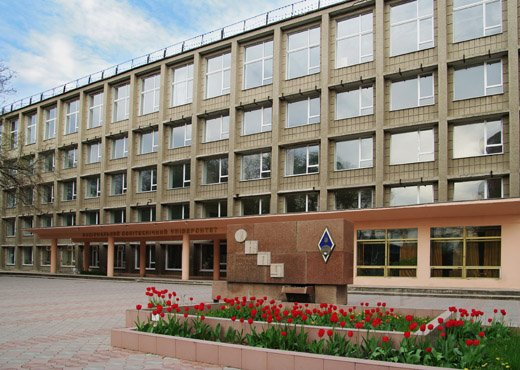

Информация
О себе
 С ранних лет школьной жизни показывал себя, как образцовый ученик, что не редко отмечало руководство школы. Со временем стал меньше времени уделять учебе и больше времени самому себе. Круг общения узок, так, как с детства имел большое количество неприятных опытов общения со сверстниками, поэтому огранчил себя лишь самыми верными товарищами. Сам по себе, я являюсь добрым и отходчивым человеком. Не стану скрывать, что являюсь довольно ленивым человеком, однако, если берусь за решение того или ного рода дела, то довожу его до конца.
Изначально планировал поступить в ВУЗ на проффесию Судоводителя, но, по стечению обстоятельств, не удалось, из-за проблем со зрением. Затем удосужился явиться в Одесский Национальный Политехнический Университет, где многое узнал о сфере Информационных технологий и решил, что путь мой будет лежать в IT. На данный момент получаю высшее образование в этом университете, в Институте Компьютерных Систем.
Себя оцениваю, как оптимистичного человека, который не сдается и ищет пути разрешения проблемы, которая возникла на пути. На данный момент определился лишь со сферой разработки программного обеспечения - Веб-технологии. Планирую начать свой рост, как UI разработчика, с HTML-верстки, а затем перейти в полноценный Front-end. Главным своим качеством считаю перфекционизм, который даёт о себе знать при выполнении углубленных задач.